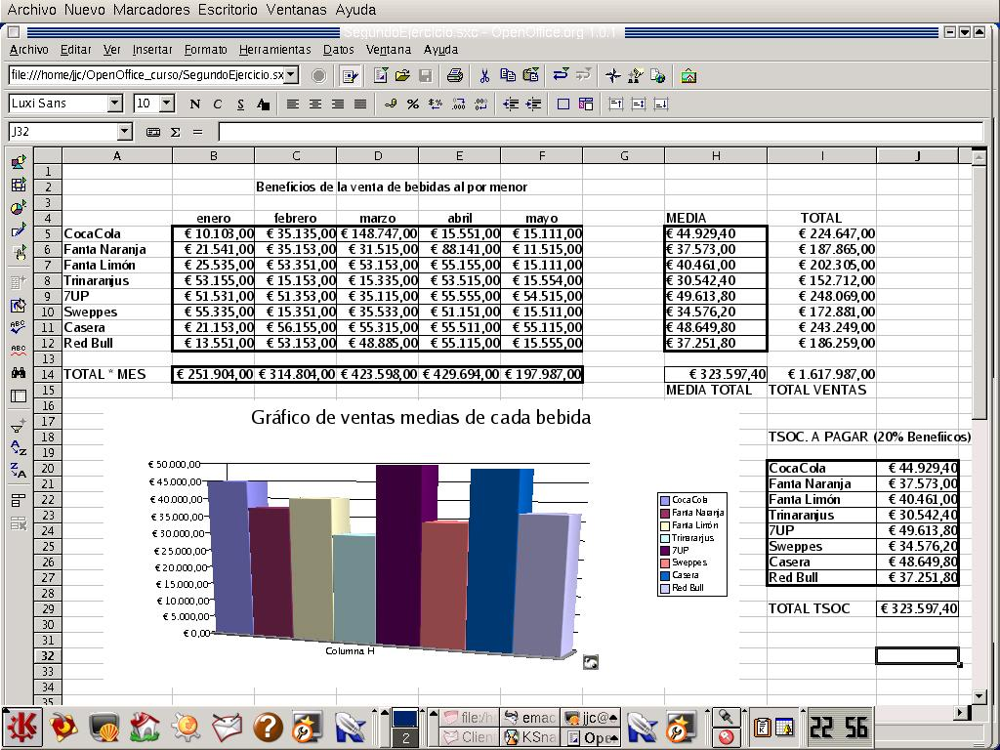
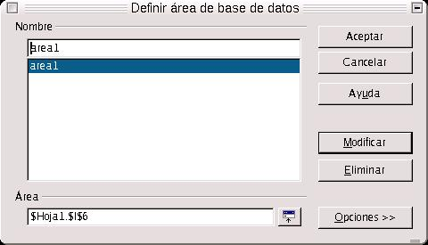
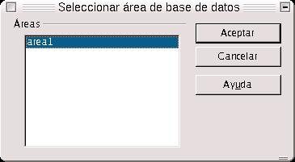
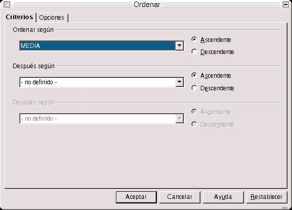

| Herramientas en GNU/LINUX para estudiantes universitarios: La suitte ofimática OpenOffice.org 1.0.1 | ||
|---|---|---|
| Anterior | Capítulo 3. OpenOffice.org Calc | Siguiente |

Vamos a complicar un poco más el ejercicio anterior. Imaginemos ahora que deseamos ordenar los datos de beneficios. Pero queremos ordenarlos por media de Beneficios por cada bebida.
Para obtener la media, sumamos en cada bebida los beneficios por mes y lo dividimos entre los cinco meses de rango. Eso lo hacemos directamente escribiendo en el campo de celda correspondiente lo siguiente =(SUMA(B5:F5)/5).
Una vez hecho esto, situamos el cursor justo debajo de la celda en que estemos sitados, debajo a la derecha, hasta que aparece un cursor en forma de cruz. Esto lo hacemos para copiar el formato y la fórmula de la celda en las que están inmediatamente debajo. Dicha fórmula se aplicará a las celdas relacionadas.
Una vez obtenida la tabla de medias, vamos a ordenar todos los datos según la media de los mismos. Primero hemos de definir un área de base de datos.
Para seleccionar dicho área, nos vamos a la Barra de menús, y dentro de ella, a Datos. Seleccionamos Definir Area. Es cuando nos aparece un cuadro de diálogo, y entonces seleccionamos el área de la tabla anterior con sus encabezados, más la tabla de media. Seleccionamos todo dicho área (con el botón izquierdo del ratón, arrastrando), y la llamamos en el cuadro de lista Nombre Área2, y aceptamos. Ya hemos definido un área.

Para ordenar los datos, hay que seleccionar el área primero. Se selecciona en Seleccionar Area, y en el cuadro de diálogo se pone el nombre del área, y aceptamos. El área aparece en la pantalla como seleccionada. Entonces es cuando podemos empezar a ordenar los datos.

Nos vamos a la barra de menús, y dentro de Datos, nos movemos hacia Ordenar. Enseguida aparece un cuadro de diálogo, con dos fichas y un conjunto de campos. En la ficha criterios introduciremos el nombre del primer, segundo y tercer encabezados según los cuales van a ordenarse los datos, y el orden en que deseamos que aparezcan, descendente o ascendente. Podemos seleccionar el que queramos. En la ficha Opciones nos encontraremos con una serie de casillas de verificación y campos. Aquí es dode se activa la casilla de verificación Area Contiene Encabezamientos de Columnas. Esto es importante porque si no activo dicha casilla, tomará los datos, pero tomando los encabezamientos como unos datos más cualquiera.

Dentro de la ficha opciones, podemos indicar si deseo que los resultados de la ordenación se muestren en otra zona de la hoja de datos, o que se ordenen los datos en una clasificación definida por el usuario. También, le indicaré si los datos que quiero ordenar están distribuidos en filas o columnas. En el caso de este ejercicio, se distribuyen en filas.
Una vez definida la ordenación de los datos, y aceptada, vemos el resultado. Ahora queremos realizar el gráfico de la media.
Para hacer el gráfico, usamos el mismo procedimiento que se explicó en el ejercicio anterior, con la salvedad de que en la categoría del diagrama seleccionamos 3D y el tipo columnas. Por si no lo recordases, debes pulsar en el botón de diagrama en la barra de herramientas y seleccionar como área, los datos de la media.
En la derecha de la hoja, hay una columna con encabezado Total, que es el total de los beneficios obtenidos por bebida. Para calcular dicho total, situamos el cursor en la fila de cada bebida, y pulsamos en el botón Suma Total, que está en la barra de definición de la función. Una vez hecho esto.
Así lo hacemos con el resto de las celdas, hasta obtener la sumas totales de todas las bebidas.
De la misma forma, podemos hallar el total de beneficios por mes, seleccionando las celdas por meses, la media total y el total absoluto de beneficios.
Para calcular los datos de la tabla Impuesto de Sociedades a Pagar en cada bebida, aplicamos el 20% sobre el total de beneficios por bebida, o también podemos aplicar la siguiente fórmula =((SUMA(B5:F5))*20)/100. Es decir, volver a hallar la suma de cada bebida y sobre dicha suma, el 20%. Lo mismo para cada celda.